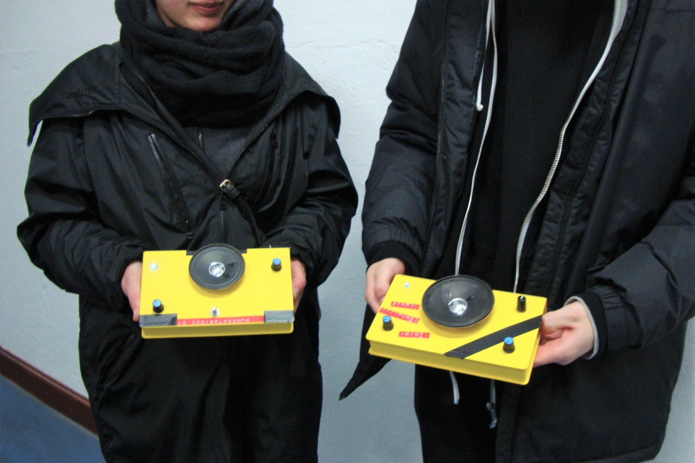
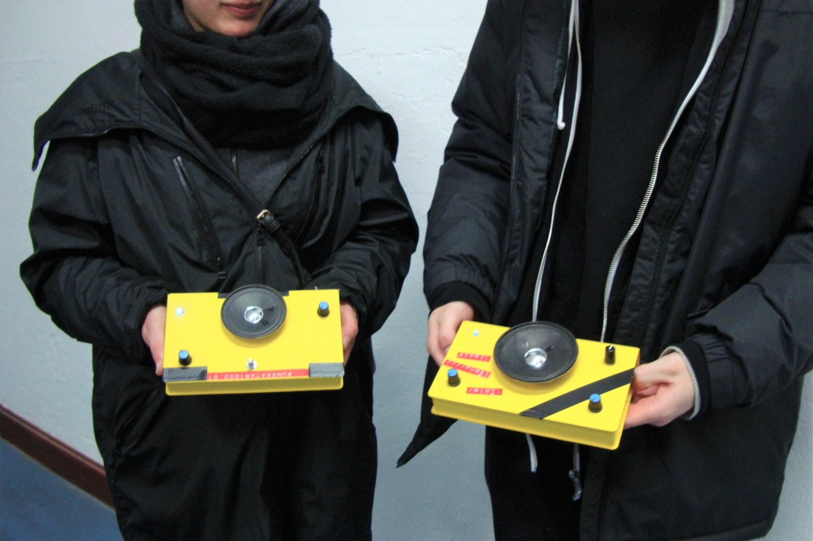
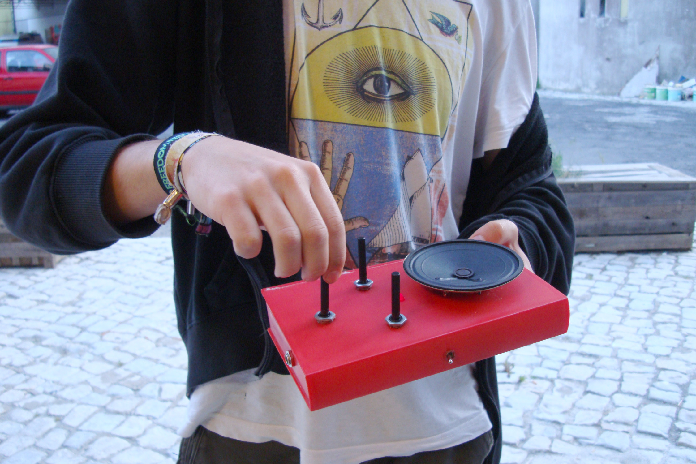
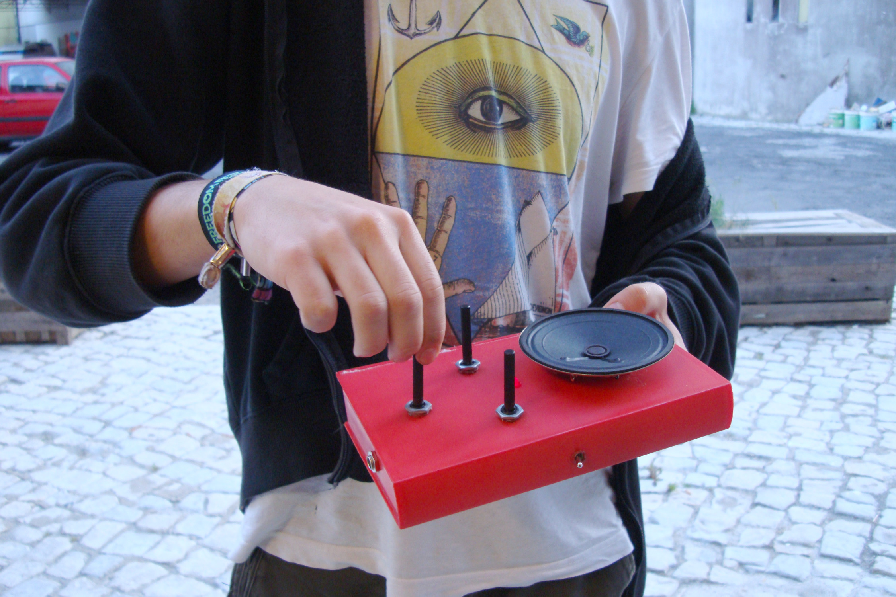
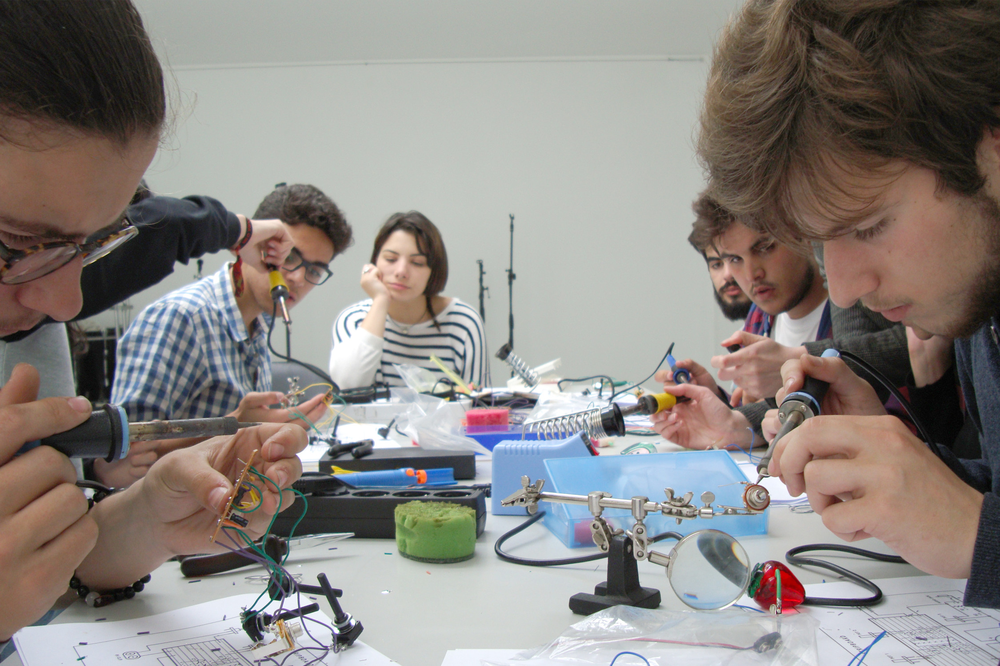
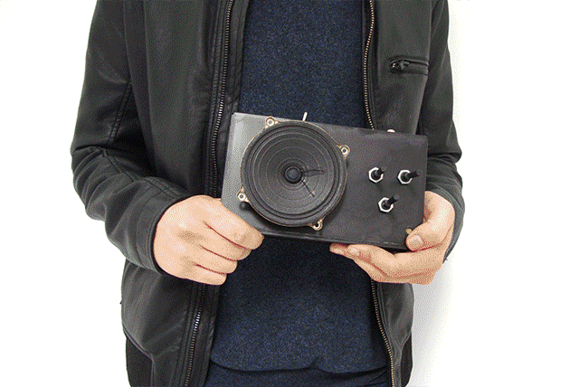
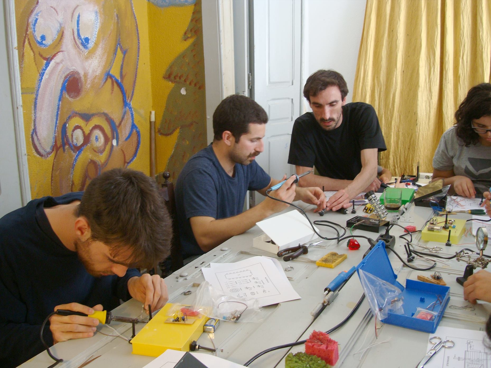
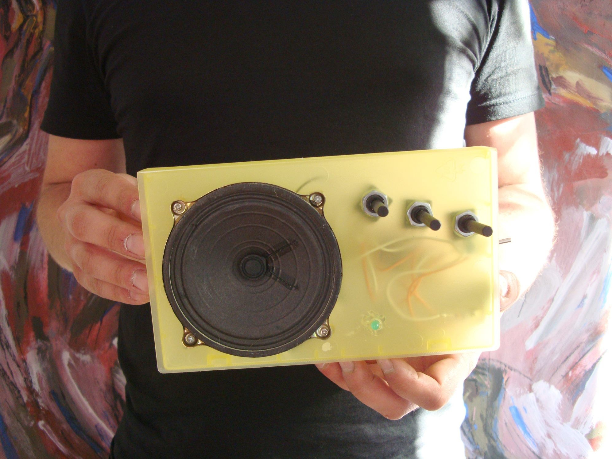

Atari Punk Console
Workshop Atari Punk Console
OpenField, Porto, 2016
Coordination - Inês Castanheira, Mariana Sardon
Make your own synth!
 



Workshop Atari Punk Console 2.0
Workshop at DAR, Caldas da Rainha, 2016
Coordination - Inês Castanheira, Mariana Sardon
Workshop at DAR, Caldas da Rainha, 2016
Coordination - Inês Castanheira, Mariana Sardon
 


Workshop Atari Punk Console 3.0
Workshop at Marte, Barcelos, 2016
Coordination - Inês Castanheira, Mariana Sardon
 
Workshop Atari Punk Console 4.0
Workshop at Fenda, Porto, 2016
Coordination - Inês Castanheira, Mariana Sardon
 